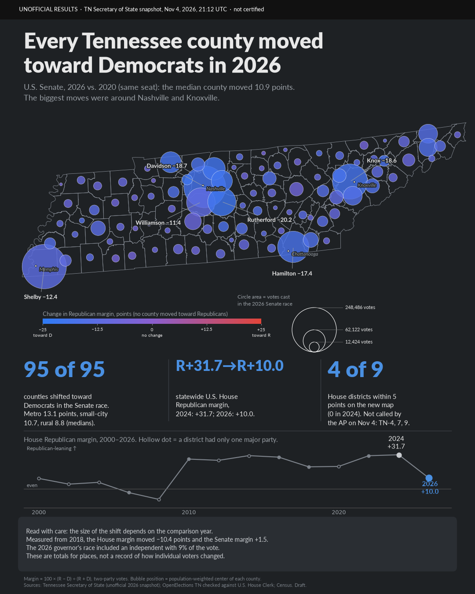

Tennessee 2026 election maps (draft)
Maps from a work-in-progress analysis of Tennessee elections, 2000–2026. Results shown are an unofficial election-night snapshot and will change as counties canvass and the state certifies. This page is a draft: nothing here is a final conclusion.
Margin = 100 × (R − D) ÷ (R + D), two-party votes. Maps show where results moved, not how individual voters changed. Sources: Tennessee Secretary of State (unofficial 2026 snapshot); OpenElections TN checked against U.S. House Clerk; Census Bureau; HB 7003 (114th General Assembly).
![Dark map of Tennessee with hollow county outlines and one circle per county. Circle size is votes cast in the 2026 U.S. Senate race; circle color runs from blue (largest move toward Democrats) toward purple (smaller moves). Every circle is blue or blue-purple: all 95 counties moved toward Democrats compared with 2020, with the biggest moves around Nashville and Knoxville. Side panel: statewide U.S. House Republican margin fell from R+31.7 in 2024 to R+10.0 in 2026, and four of nine House districts were within 5 points.](img/hero_dark_16x9.png)
U.S. Senate, 2026 vs 2020 (same seat). Median county moved 10.9 points toward Democrats; 95 of 95 counties moved. The size of the shift depends on the comparison year (measured from 2018, the House margin moved -10.4 points and the Senate margin +1.5). In the 2000-2026 strip, hollow dots mark years when a district had only one major party on the ballot, which distorts the statewide margin (for example 2008).
Open full size

Circle position is the population-weighted center of each county (2020 Census). Colors: blue = toward Democrats, purple = no change, red = toward Republicans; no county moved toward Republicans.
Open full size

Old and new districts cover different territory, so the two panels are not a like-for-like change. The AP had not called TN-4, TN-7 or TN-9 as of Nov 4 (per project owner).
Open full size

Same data and caveats as the wide version.
Open full size
Page generated 2026-11-05 01:58 UTC. Separate from the 2026 margin-maps page at the site root.